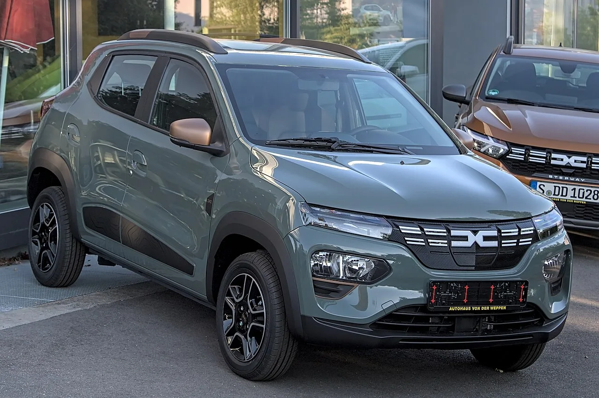

▲ 국내에서는 여전히 '경차'로 불리는 캐스퍼 일렉트릭, 유럽에서는 전혀 다른 이름과 위상으로 팔린다
국내에서 캐스퍼 일렉트릭을 아는 사람은 많지만, '인스터(Inster)'를 아는 사람은 드물다. 그런데 이 둘은 같은 차다. 현대차가 국내에서 경형 전기 SUV로 파는 캐스퍼 일렉트릭은, 유럽 시장에 나가는 순간 인스터라는 완전히 다른 이름을 얻는다. 그리고 그 이름으로 2025 골든 스티어링 휠 어워드에서 '2만 5,000유로 미만 최고의 차'로 선정됐고, 독일에서는 피아트 500e·다치아 스프링을 제치고 소형 전기차 판매 1위에 올랐다. 왜 국내에서는 그저 그런 경차 취급을 받는 모델이, 이름을 바꿔 단 순간 유럽 최고 권위의 상을 받았을까.
1. 유럽에서는 "캐스퍼"가 아니다 — 인스터라는 재탄생
현대차는 캐스퍼 일렉트릭을 유럽에 수출하면서 차명을 '인스터(INSTER)'로 바꿨다. 국내에서는 '귀여운 경차'라는 이미지가 강하지만, 유럽에서는 이 차를 실용적인 도심형 소형 전기차로 다시 포지셔닝한 것이다. 현대차 관계자도 "국내에서는 경차 이미지가 강하지만 유럽에서는 실용적인 도심형 전기차로 인식되고 있다"고 설명한 바 있다.
이런 리브랜딩은 단순한 이름 바꿔치기가 아니다. 같은 차체와 파워트레인이라도, 어떤 시장의 어떤 언어로 소개되느냐에 따라 소비자가 받아들이는 가치 자체가 달라진다는 걸 보여주는 사례다. 국내에서 경차 취급을 받던 모델이 유럽에서는 폭스바겐 업, 르노 트윙고 같은 도심형 소형차들과 어깨를 나란히 하는 상품으로 재해석됐다.
2. 다치아 스프링보다 비싼데 왜 이겼나

▲ 다치아 스프링은 약 1만 7,300유로로 인스터보다 훨씬 저렴하지만, 항속거리는 약 225km에 그친다 ⓒ Wikimedia Commons
가격만 보면 인스터(캐스퍼 일렉트릭)의 승리는 의외다. 최저가 경쟁 모델인 다치아 스프링은 약 1만 7,300유로로, 인스터(24,400~26,400유로)보다 7,000유로 이상 저렴하다. 그런데도 인스터가 독일에서 35% 이상의 점유율로 1위를 차지한 이유는 항속거리와 상품성의 격차에 있다. 다치아 스프링의 1회 충전 주행거리는 약 225km에 그치는 반면, 인스터는 이보다 훨씬 여유로운 항속거리를 확보하고 있다.

▲ 피아트 500e는 브랜드 헤리티지가 강점이지만, 실용성과 가격 경쟁력에서 인스터에 밀렸다는 평가가 나온다 ⓒ Wikimedia Commons
| 모델 | 유럽 판매가 | 1회 충전 항속거리 | 비고 |
|---|---|---|---|
| 현대 인스터(캐스퍼 EV) | 24,400~26,400유로 | 다치아 스프링 대비 우위 | 2025 골든 스티어링 휠 어워드 수상, 독일 점유율 1위 |
| 다치아 스프링 | 약 17,300유로 | 약 225km | 최저가, 짧은 항속거리 |
| 피아트 500e | 인스터와 비슷한 급 | - | 브랜드 헤리티지 강점 |
📍 골든 스티어링 휠 어워드란
1976년 시작된 이 상은 유럽에서 가장 권위 있는 자동차 평가 중 하나로 꼽힌다. 인스터는 이 시상식에서 '2만 5,000유로 미만 최고의 차' 부문을 수상했는데, 이는 저가형 세그먼트 안에서도 상품성과 가성비를 종합적으로 평가받았다는 의미다. 단순히 싸다고 이기는 상이 아니라는 뜻이다.
3. 태생의 아이러니 — 광주형 일자리가 만든 차, 유럽이 먼저 알아봤다

▲ 국내에서는 시승 이벤트 차량으로도 익숙한 캐스퍼 일렉트릭. 정작 이 차를 만드는 공장 자체가 국내 산업정책의 실험이었다 ⓒ CarPrism
캐스퍼(인스터)를 생산하는 광주글로벌모터스(GGM)는 '광주형 일자리'라는 정책의 산물이다. 고비용·저효율이라는 국내 제조업의 고질적 문제를 풀기 위해 2019년 9월 노사 상생형 지역 일자리 모델로 출범한 합작법인으로, 국내에 완성차 공장이 새로 세워진 것은 23년 만이었다. 2021년 9월부터 캐스퍼를 위탁생산하기 시작했고, 이후 전기차 버전인 캐스퍼 일렉트릭 생산까지 맡았다.
즉 이 차는 애초에 '안정적 일자리'와 '적정한 기업 수익'을 동시에 노린 국내 산업정책 실험의 결과물이다. 그런데 정작 그 실험이 성공적이었는지를 가장 먼저, 가장 뚜렷하게 증명해준 곳은 국내 시장이 아니라 유럽 시장이었다. 골든 스티어링 휠 수상과 점유율 1위라는 결과는, 광주형 일자리 모델이 만들어낸 상품성이 국제 무대에서도 통한다는 것을 보여준 셈이다.
✅ 이 흥행이 국내 소비자에게 남긴 것
인스터의 유럽 흥행은 국내 소비자에게는 좋은 소식만은 아니다. GGM 생산 물량의 상당수가 수출에 우선 배정되면서, 정작 국내 계약자들은 최장 28개월에 달하는 출고 대기를 감내해야 하는 상황이 이어지고 있다. 이 출고 대란의 구체적인 배경과 트림별 대기기간, 대안 모델은 카프리즘이 이미 별도 기사로 다룬 바 있다.
4. 요약 — 같은 차, 다른 이름, 다른 평가
요약
국내에서 캐스퍼 일렉트릭으로 불리는 이 차는 유럽에서 '인스터(INSTER)'라는 이름으로 팔리며 완전히 다른 위상을 얻었다. 1976년부터 이어진 권위 있는 독일 골든 스티어링 휠 어워드에서 '2만 5,000유로 미만 최고의 차'로 선정됐고, 독일 소형 전기차 시장에서 35% 이상의 점유율로 1위에 올랐다. 최저가 경쟁모델인 다치아 스프링보다 7,000유로 이상 비싸지만, 항속거리와 종합 상품성에서 앞선 것이 승부를 갈랐다.
이 차를 만드는 공장 자체도 의미가 크다. 광주형 일자리로 탄생한 국내 첫 노사 상생형 완성차 공장, 광주글로벌모터스가 생산을 전담한다. 국내 산업정책의 실험이 국제 시상식과 시장 점유율로 먼저 검증받은 셈이다.
다만 이 흥행의 이면에는 국내 소비자의 몫이 있다. 생산 물량이 수출에 우선 배정되면서, 정작 이 차를 처음 만든 나라의 소비자들이 가장 오래 기다려야 하는 역설적 상황이 계속되고 있다.